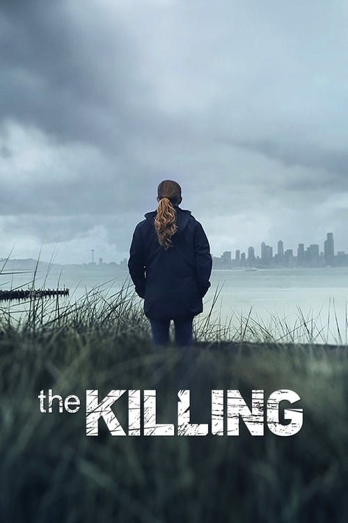

The Killing (2011)
Sinopsis Rápida
El asesinato de una joven Rosie Larsen sacude Seattle, y dos detectives, Linden y Holder, se enfrentan a una investigación compleja llena de secretos y mentiras que desentrañarán una red de corrupción.
Sinopsis Detallada
The Killing explora la investigación del asesinato de Rosie Larsen a lo largo de cuatro temporadas, ofreciendo un retrato sombrío y realista del sistema judicial y la vida en Seattle. La serie destaca la relación compleja y a menudo tensa entre los detectives Sarah Linden y Stephen Holder, mientras trabajan juntos para resolver el caso, enfrentándose a sus propios demonios personales y a una conspiración que se extiende mucho más allá de la superficie. La narrativa meticulosa, con sus giros inesperados y su atmósfera opresiva, mantiene al espectador en vilo hasta el final.
¿Por qué tenés que verla?
- Una investigación policial compleja y absorbente que te mantendrá al borde de tu asiento.
- Las actuaciones excepcionales de Mireille Enos y Joel Kinnaman crean una química convincente entre los detectives.
- La serie influyó en la narrativa de las series de investigación policial posteriores, estableciendo un estándar de realismo y complejidad.
- Explora temas profundos sobre la justicia, la corrupción y la naturaleza humana.
Idea Extra
Comparación de la adaptación americana con la danesa 'Forbrydelsen', analizando las diferencias y similitudes en la trama y los personajes.